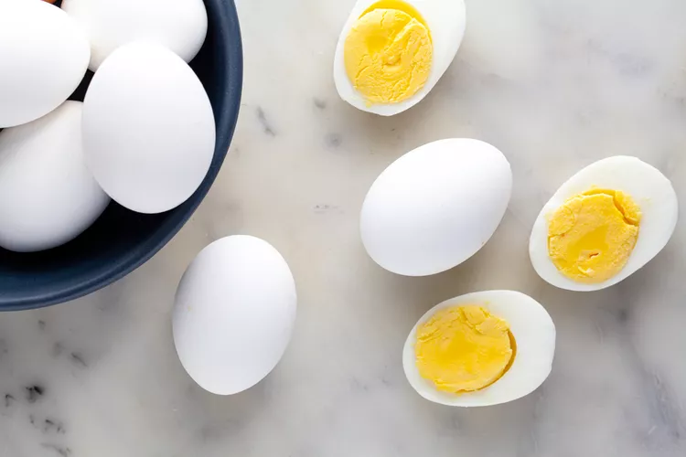

Egg dish

Description
egg is a classic Italian al forno dish that generally consists of alternating layers of pasta sheets and various fillings, including - though not exclusively - ragù, besciamella and cheese, such as mozzarella, ricotta or Parmesan.
Ingredients
- Meat
- Onion
- Fresh Herbs
- Sugar
Steps
- Cook the meat: Cook the ground meat in a skillet until browned and crumbly. Add the onion and continue cooking until it's translucent. Stir in the canned tomato products, half of the parsley, garlic, basil, 1.5 teaspoons of salt, oregano, and sugar.
- Cook the noodles: Boil the lasagna noodles in lightly salted water until they're al dente.
- Bake the lasagna: Cover with foil and bake in the preheated oven for about half an hour. Remove the foil and continue baking until the top is golden brown.
Back to HomePage